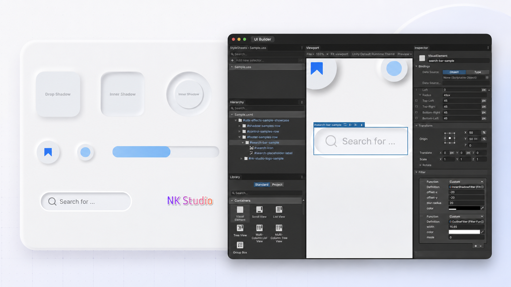

UITK Effects Overview
UITK Effects is a Unity package that adds ready-to-use UI Toolkit visual effects through assets instead of runtime scripts.
The package includes custom filter definitions for shadows, glow, and outline effects, plus a UI Toolkit-compatible gradient material.

Features
- Asset-based UI Toolkit effects that can be referenced from USS or UI Builder
- Multiple shadows can be applied to labels, images, and vector graphics
- Multiple outlines can be layered with Outside, Center, or Inside alignment on labels, images, and vector graphics
- Shadow, glow, outline, and other effects can be stacked to create a single composite visual
- Gradient material for
-unity-materialwith color, angle, and step controls - No runtime C# API required for normal usage
- Suitable for neumorphic UI samples, soft controls, badges, search bars, and branded text
Included effects
| Effect | Type | Description |
|---|---|---|
| Drop Shadow | Filter | Adds one or more soft shadows outside an element |
| Inner Shadow | Filter | Adds recessed shading inside an element |
| Outer Glow | Filter | Adds a soft colored glow around an element |
| Outline | Filter | Draws one or more borders with Outside, Center, or Inside alignment |
| Gradient | Material | Renders configurable smooth or stepped color gradients |